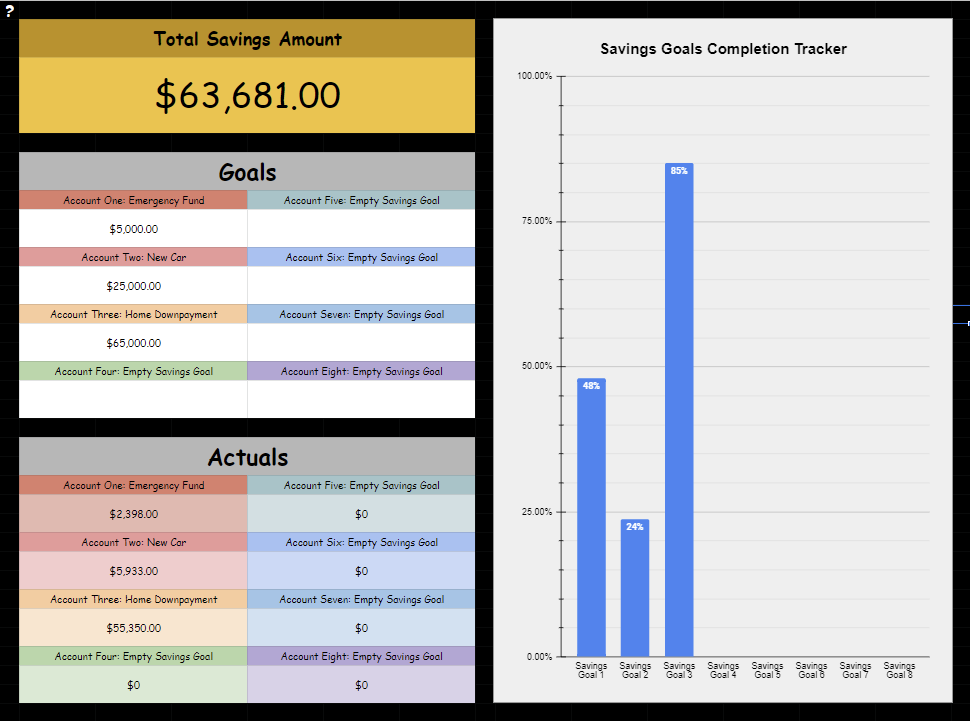
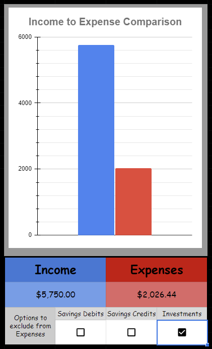

Before using the Menji Money free budget template, feel free to review how to use it below! Or watch the YouTube video for a video tutorial.
YouTube Video: [TUTORIAL] Menji Finance Budget Sheet
Google Sheets Button
Microsoft Excel Button
Written Tutorial

When you first open the Budget Sheet, you will open to this tab called "Dashboard". This contains a summarization of a few things:
1. Select Period: You can select the month, quarter, or the entire year for review.
2. Bill/Subscription Tracker: You can keep track of all your monthly obligations, price, date it's due, and check off if it's been paid yet.
3. Actual Expenses: The category name, the amount spent in that category, the percentage of how much of your budgeted goal you've spent so far, and a progress bar to visualize that percentage.
4. Budgeted Expenses: This shows the category name, the amount you've budgeted for that category, and a displays a pie chart to show the percentage of how much each category takes from your income.
a. Note: When you haven't set a budget for the selected period you will see a red bar reminding you to set the budget before you can see the pie chart.
5. Income to Expense Comparison Table: When you enter your income it will show a blue bar on the right. Then, as you enter expenses, a red bar will slowly rise on the right side. The goal is to NEVER have that red bar exceed the blue bar.
a. Directly below the table you can see the dollar amount of how much income and expenses you have accumulated.
b. Under that you will see options to adjust how the red bar is displayed. For example, if you want to see how much money you ACTUALLY spent (not including money you put in savings or towards investments), then you can select those options.
Note: On Microsoft Excel, the Bill/Subscription box looks different because they do not have a checkbox feature. An easy work around is just to type the word "yes" to keep track of that.

Likewise, due to the lack of checkboxes you will have to type "True" or "False" to correctly trigger the functions that display the adjustments on the red bar. TRUE means that the checkbox would be marked. FALSE means that the checkbox would be unmarked.
The Transaction History tab is where you do the expense tracking. Here, you can keep track of all of your expenses. For a detailed record, you can include the date, name of the item purchase, the category it falls under, additional information (if applicable), and the cost. Inputting the information here will help translate to the Dashboard tab for a nice visual summary of your spending.

The categories are the same categories mentioned in the "Creating A Budget" section of this website!
Note: When you want to place some money into a savings goal use the "Savings Credit" option. When you withdraw money from a savings goal use the "Savings Debit" option.
Note: I did not include any categories such as "dining out" or "movies" because I categorized them all under "Entertainment".

When you select a category it will display a color on the expense tab. This is very helpful for quickly finding information. For example, if your "Entertainment" category was higher than expected, then you can quickly scan for yellow tabs and remind yourself what you purchased that month. This is great way to make plan to meet your goals the following month.

The additional information is really meant for the "Income", "Savings Credit", and "Savings Debit" categories.
The income category is strictly informational. It's a good way to keep track of different types of income.
The savings credit and debit categories are essential. You need to tell the Budget Sheet which savings goal to move money in/out from.

The Savings Goal tab of the sheet is where you can keep track of - you guessed it - your savings goals! I decided to set a limit of 8 goals. I believe that if you have more, then you're possibly stretching your money thin and won't hit ANY of your goals.
Here is where you get to input your goals. The top section called Goals is where you can create a name for your goal in the spot where it says "Empty Savings Goal" and set a dollar amount right under the name.
The way to track money placed in a savings goal is to input it as a "Savings Credit" in the Transaction History tab.

Once you have goals set and place some money into the account you will be able to see a progress chart on the right!

The Budget tab is where you get to create your budget for the month. You add the budgeted income and expenses. The "total budgeted expenses" should match the budgeted income you enter. If that number is higher, then you need to subtract some expenses. If that number is lower, then I suggest you place the remainder into investments or savings. Every single dollar needs to have a job! Even if you decide to go ahead and place it into the entertainment category. A jobless dollar is a lost dollar.

Here's an example of a completed monthly budget.
The Data tab is where all of the magic happens. You can just ignore this tab. Messing around with any of the functions in this tab could skew data and cause errors in the functionality of the rest of the Budget Sheet!

Let's check out an example of using the budget sheet. We are going to use the same budget as the example provided earlier. Data has been placed into the Transaction History. Remember how I said to try and use money earned from the previous month as income for the current month? This helps give a definitive income amount, so I did that in this example.

You can see the Dashboard is starting to fill in now that we have a budget and expenses. See the Income to Expense Comparison Chart?
Check out the Expense Comparison Chart now. I decided to exclude any money put into investments to see how much money actually left my pocket.
Thank you for reviewing the tutorial on how to use the Menji Finance Budget Sheet! Now you're ready to take control of your personal finances!